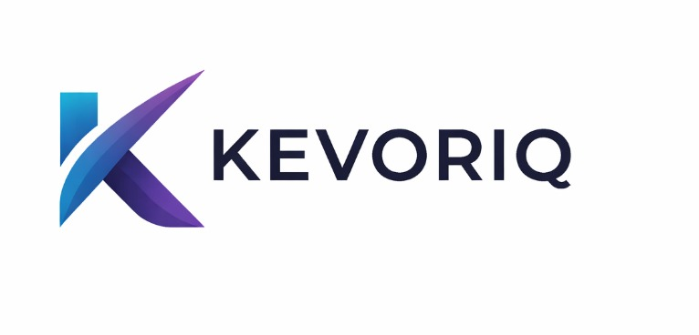

Purpose-built applications designed around domain workflows, operator roles, and process visibility.
Enterprise Software Company
Software products for operational teams.
KEVORIQ builds software products, AI systems, and workflow automation for teams working across health, risk, hospitality, legal, and operations.
- Focus
- Enterprise software, AI systems, and workflow automation.
- Coverage
- Health, risk, hospitality, legal, and operations products.
- Location
- Remote, United States.

Company
KEVORIQ
Products
Five focused product lines with domain-specific software direction.
Approach
Build clear product surfaces first, then add AI and automation with intent.
What KEVORIQ Builds
A company focused on software products with operational depth.
KEVORIQ is positioned as a professional software company, not a generic agency. The work centers on products that support review, throughput, structured decisions, and internal operational coordination.
Review, classification, summarization, and decision-support systems tied to specific product surfaces.
Automation layers for repetitive coordination, queue management, and exception-heavy operations.
Products
Product lines aligned to real industries and real workflows.
Select a product line on the left to view its focus, product direction, and example system on the right.
Healthcare
Kevoriq Health
Software products for prior authorization, denials, and documentation quality workflows where teams need stronger consistency, visibility, and follow-through.
- Prior authorization workflow support across queues and review states
- Denial review intelligence with issue tagging and follow-up structure
- Documentation QA and compliance-oriented review support
Risk and Compliance
Kevoriq Risk
Products for onboarding, compliance review, KYC, AML, and analyst decision flows where traceability and operational clarity matter.
- Identity review workflows with structured analyst decisions
- Risk scoring and exception handling visibility
- Compliance review systems for alerts, notes, and documentation
Hospitality
Kevoriq Stay
Hospitality products for guest operations, review intelligence, and service coordination across fast-moving team environments.
- Guest communication workflows tied to internal task routing
- Operational visibility across service teams and service states
- Review intelligence for issue clustering and service insight
Legal
Kevoriq Legal
Legal workflow products for contract review, policy intelligence, and internal knowledge access where structured review is critical.
- Contract review support for clauses, flags, summaries, and approvals
- Policy retrieval and guidance systems for internal users
- Legal operations workflow acceleration for intake and routing
Operations
Kevoriq Ops
Internal operations products for workflow orchestration, queue management, and repetitive process handling across business operations.
- Task routing and operational status visibility
- Exception handling systems with ownership and escalation logic
- Automation layers for repeatable back-office processes
Building Strategy
Products are shaped around the workflow first.
KEVORIQ starts by understanding the work itself, then designs the product structure, and finally introduces AI or automation where it improves quality, speed, or reliability.
Study the workflow
Map the process, the stakeholders, the review states, and the operational bottlenecks.
Define the product surface
Design the right screens, system states, user flows, and operator actions around the work.
Apply intelligence intentionally
Use AI and automation where they materially improve throughput, review quality, or coordination.
Contact
Get in touch about products, company opportunities, or future builds.
For company inquiries, product discussions, or partnerships, contact KEVORIQ directly.